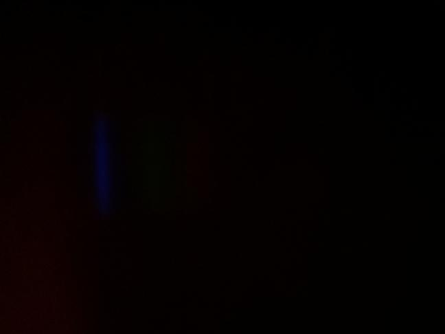
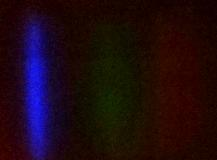
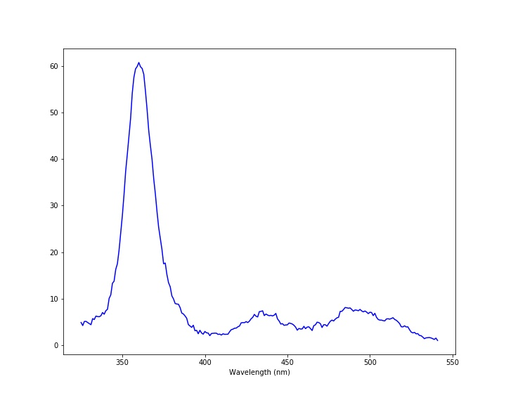

Lego SpectrometerMeasurement taken on Sunday, November 14, 2021 at 10:09 AMScientist: Thuviksa MathialakanLight source: My Sparrow Mini Flashlight Transmission sample: None Exposure: 50001 µsec Experiment notesThis is a measurement for an experiment testing the difference between reflected and not-reflected light. Sparkly rainbow cardboard used to reflect flashlight light. Tracing paper used between light and entrance slit. Small slit used. |
ImagesRaw imageProcessed imageSpectrum |
| Download Data |